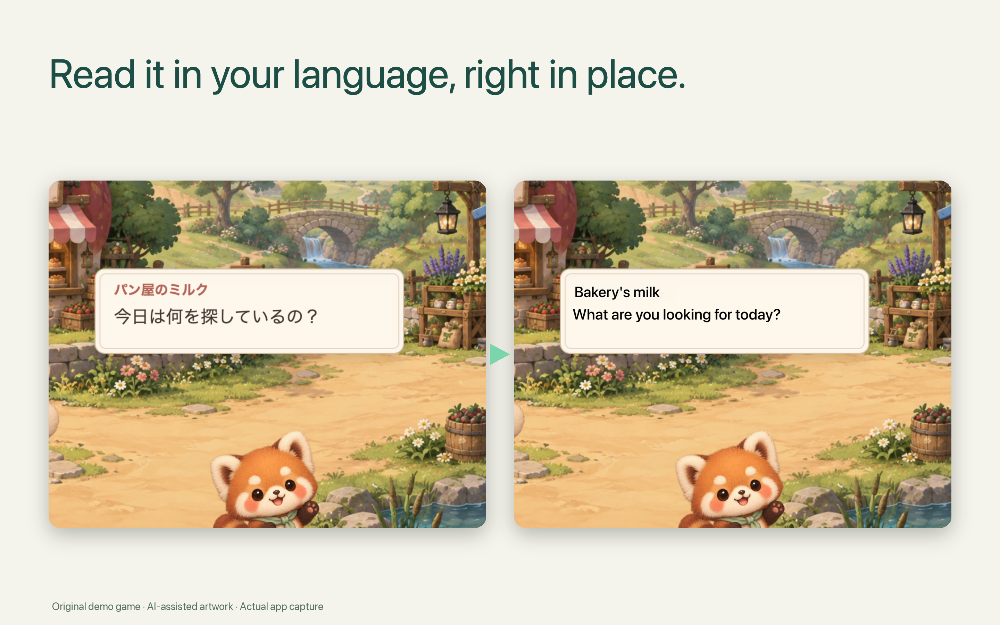
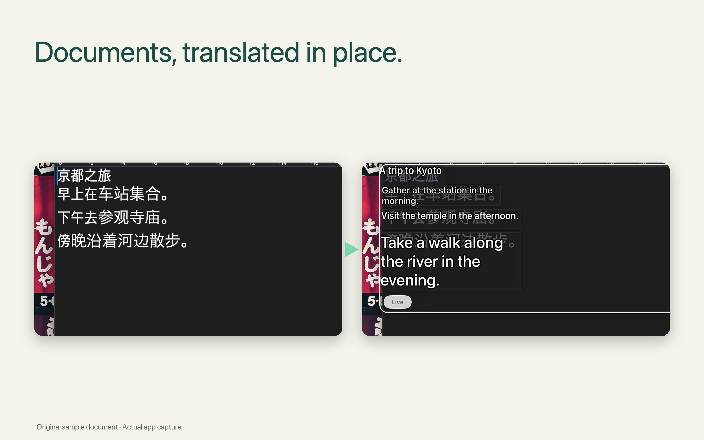

Editorial materials · macOS 15+ · October 8, 2026
Read across languages.
Stay in the moment.
A game’s dialogue. A scanned document. Text inside an image. When copying is not an option, draw a viewfinder and read the translation directly over the original screen.
Selected scenes at original speed, with cuts and camera crops. Original demo game with AI-assisted artwork. Recognition and translation results vary.
Keep the text in its context.
Read a Japanese game conversation without leaving its characters and scenery, or understand a scanned page without retyping it. Move or resize the viewfinder to focus on another part of the screen. Live mode follows changing text in the selected region.
Apple Vision recognizes the text and Apple Translation translates it on your Mac. After the language packs are downloaded, translation works offline. Screen content and translations are not sent to an external server.
A clearer first translation, in more languages.
Released October 7, 2026 KST, version 2.5.3 adds a Russian interface and permission text, bringing the app interface to 12 languages. This is separate from the recognition and translation languages available on each macOS version.
First-use guidance now shows the actual menu-bar icon and a concrete next step. Quick Start responds to Return. Language-pack actions are easier to find, and Settings, translation-style previews and localized history are easier to read.
Screen translation and Live mode were already available before this update. Version 2.5.3 improves setup and localization; it does not introduce a new translation engine. Version 2.5.4 is awaiting Apple review and changes the Store media, with the same app behavior.
Published 2.5.3 release notes →Games and documents, in place.




A native Mac workflow, on-device.
macOS 15 or later. Screen Recording permission is required. Recognition and translation languages depend on the overlap of Apple Vision and Apple Translation support on the user’s Mac. Language packs must be downloaded before offline use.
No account, subscription or app analytics. One-time purchase, with local pricing on the App Store. Translation history stays on the Mac and can be cleared or limited in Settings. Developer: Serendipity Bound.
The video and screenshots show selected real app outputs, not guaranteed accuracy or compatibility with every font, game or rapidly changing subtitle. The reported long-sleep translation failure remains under investigation.
Download H.264/AAC demonstration · Game screenshot · Document screenshot